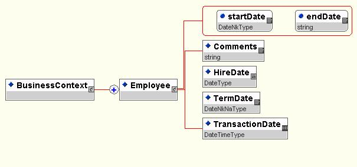

Effective Dating
Recommendation, 2007 April 15
Editor:
Karl Brophey, eBenX
Authors:
Mark Marsden, Ultimate Software
Karl Brophey, eBenX
Contributors:
Members of the Cross Process Objects workgroup
Copyright © 2007 HR-XML Consortium, Inc.
Abstract
Effective Dating may be relevant for objects, associations between objects and single attributes of objects. The objective of this document is to define a consistent manner for using effective dates for all of these situations throughout the consortium’s work. Specifically, this will consist of a guided thought process for work groups to follow to determine their needs as well as a set of design patterns to be used based on the decisions made.
Table of Contents
1.3.2 Items Within the Design Scope
1.3.3 Items Outside of Design Scope
2 Implementation Considerations
2.2 Identifying Situations for “Event Dates”
2.3 Handling Situations for “Event Dates”
2.4 Identifying Situations for “Applying to State”
2.5 Handling Situations for “Applying to State”
2.5.1 Representation of the Dates
2.5.2 Positioning within the Model
2.5.3 Allowance for Multiple States
2.6 Providing Implementation Guide Documentation
3 Appendix A - Vocabulary Requirements
4 Appendix B - Document Version History
5 Appendix C – Related Documents
6 Appendix C – Reference Examples
1 Overview
1.1 Objective
Effective Dating may be relevant for objects, associations between objects and single attributes of objects. The objective of this document is to define a consistent manner for using effective dates for all of these situations throughout the consortium’s work. Specifically, this will consist of a guided thought process for work groups to follow to determine their needs as well as a set of design patterns to be used based on the decisions made.
1.1.1 Domain Issues
Effective dating within the Human Resource domain poses many challenges. Although many situations only require a date, some circumstances need precision to the second or more. For example, a medical insurance policy may be effective on 2001-01-01 at 00:01:01 EST. If an employee used medical services prior to that time, they may not be covered.
Given the scope of effective dating, we need to develop a consistent method for understanding and transmitting such dates. Although this document is not intended to address how to handle specific data situations within HR, some of the major areas of concern that drive the need to have a consistent handling of effective dating are listed below:
1. Contact information, such as phone, address, and name are particularly date sensitive. A person may have a summer home address and a winter home address that both need to be tracked.
2. Positions are typically budgeted for a period of time, such as a fiscal or calendar year.
3. Pay grades are effective for a specified time frame. A company may create new pay grades that won’t be effective until the next fiscal year.
4. Employee training and development may be date sensitive, such as certification expiration dates.
5. Participation dates for benefits are date and time sensitive. An employer may need to track original hire date, start date, leave of absence, termination, and recall dates to determine participation or breaks in coverage.
6. Compensation and time accounting rely heavily on effective dating. If an employee’s pay changed in the middle of a pay cycle and/or retroactively, the company needs a method for calculating the correct pay.
7. Companies use effective dating to track employee history of departments, positions, affiliations, and the like.
8. Staffing may require contracts for vendor employees that are effective for a specified time frame.
9. Employee scheduling requires date and time manipulation.
10. Requisitions are usually active for a period of time. If an employee is unable to fill the position within that timeframe, they may extend the date or remove the requisition.
11. Like compensation, benefits providers frequently require precise dating, including considerations of retroactivity, to provide fair and accurate provision of services.
1.1.2 Business Reasons
Almost all HR and Payroll business processes revolve around some event or string of events in time. All of these events have in common a start point, an end point, a duration, or some combination of these, that must be represented in a format that can be efficiently stored, conveyed and processed by HRIS systems. By developing a standard approach to providing date information we will prevent the necessity of other HR-XML Consortium work groups from devoting time and effort to addressing this on a case-by-case basis.
1.2 Design Requirements
The Design requirements must take into account the following:
1. The global concept of time as described in the DateTime Data Types.
2. Representing Date and Time values in Schema and in DTD as presented in the DateTime Data Types.
3. How to determine where and when to use effective dating in a Schema/DTD design
1.3 Scope
1.3.1 Major Components
Deliver a standard representation of effective dating, regardless of where used. The goal is consistency.
Provide a yardstick that the CPO can use as a basis for reviewing other workgroup’s schema designs.
1.3.2 Items Within the Design Scope
We first create a clear, concise vernacular for discussing effective dating. We can then provide standard usage guidelines for:
1. When to use Transaction Date/Time vs. Effective Date/Time
2. How to determine the granularity required for effective dating
3.
How to use Effective Dating with different types of processes,
i.e. Inserts vs. Modifications
4. When to use the various types in the DateTime Data Types when applying effective and transaction dating.
1.3.3 Items Outside of Design Scope
While it may be necessary to review object models and how effective dates might be stored, the storage of effective dates within any single specific HR sub-domain is outside the scope of this document. That is, this document does not attempt to describe a universe of specific event dates, such as Pay Date, Birth Date, etc. These data elements are specific to the business process being described and fall outside the scope of this document. Instead, a consistent approach to the treatment of such data elements is put forth in the form of a set of guidelines.
Time scheduling rules, such as ‘7 days before Christmas’ are not addressed in this document. Likewise scheduling items of the form ‘Every Tuesday at 10:00AM’ or ‘Every Monday through Friday from 3:30PM to 4:00PM’ is not addressed in this document. It is encouraged that for these needs that the relevant schema data types be used when possible.
The topic of concepts such as change reason is left to the workgroups or other CPO projects. While there is some correlation between why you would have a new effective date and a change reason, the variety on the topic is more than this scope can take on. Look to the Events workgroup for another voice on the topic.
2 Implementation Considerations
Before reading this section, you should be completely familiar the terminology put forth in Chapter 3 Vocabulary Requirements.
2.1 Overview
As any group works towards establishing a design for transmission of data, they will encounter date and/or dateTime elements they wish to include. As pointed out earlier, when a date is included it is always a description of an event or a state. As such, this document can provide guidance on how to handle and model all of these elements. Deciding what events and states should have date information included is left solely to the individual designers however.
Once a list of events and states has been identified, several decisions must be made. First and foremost is whether this is a representation of an event or a state. You must also decide which of the various data types is appropriate, as detailed in the Date and Time Data Types document, deciding between date or dateTime, global, local or either, and whether to allow “not known” and/or “not applicable” values. Finally, if your representation is of state, you must choose the specific representation strategy you will employ and understand how you will handle representations of multiple states through time, correction, and a state that is found to be “never in force”.
2.2 Identifying Situations for “Event Dates”
For identifying those items you wish to treat as “event dates”, some will be obvious—one time only events whose occurrence is significant within the HR domain. Examples would be a birth date, a graduation date, and a certification date. Events that mark the beginning or end of a particular state might be treated with dates as “applying to state”, or they could be treated as events, or both. If the occurrence of the event will tend to be relevant, even after the immediate state that would share a date with the event has changed, a separate element for the “event date” should be created. Examples of this form would be a hire date, a retirement date, and a date that shows the original date of continuous coverage for a particular benefit plan.
2.3 Handling Situations for “Event Dates”
If you choose to represent an “event date”, you should choose a specific, descriptive name of the form EventDate where “Event” is a suitable name for the event. Coordination of these names between layouts, if done, will be handled via the Consortium glossary.
The location of such a data element is left to the discretion of the designers. In essence they behave like any other attribute of an object or relationship. Likewise, the decision on utilizing an XML element or attribute is left to the designers with the guidance of other Consortia guideline documents.
As discussed elsewhere in this document, “event dates” are relatively simple to handle corrections upon, as they simply require a new transmission containing the corrected values.
2.4 Identifying Situations for “Applying to State”
As discussed above, virtually any call for a date that does not fit as an “event date” will by a situation that should be viewed as a representation of state through time. The most typical case will be when there is a “snap-shot” of information describing an employee, a benefit, or a job posting, and it must be known for what period of time the representation is valid.
2.5 Handling Situations for “Applying to State”
As a designer, once you have decided you need dates to “apply to state”, you must clearly resolve what representations of state in your design need to be described with dates. You must then decide upon a start and end approach, or a series of states each having a start date only. Finally, consider correction, including a state that was “Never in Force”.
2.5.1 Representation of the Dates
While the next section will discuss the detail of where to place the dates within a particular model, how you place the dates will always be identical. Either a pair of attributes or elements (as deemed most appropriate in the design based on any other applicable Consortia documents) with the set names of StartDate and EndDate should be inserted as appropriate; If the series of states approach is preferred, a single element or attribute named StartDate.
The specific data type should be chosen based on the guidance in the ’Date and Times Data Types’ Proposal.
2.5.2 Positioning within the Model
Despite the form of using a single “start date”, we will for the moment talk about attaching a “range” to various design constructs. The “range” should always be a child (sub-element/attribute) of the object/relationship/attribute it describes; never a peer. This keeps meaning clear. Further, it applies to the “state” of its containing element, and thus should be considered to apply equally to all of its peer descriptors, since they simply help describe the same parent. Note that this means that in order to provide a range for a particular “attribute” of an object, the XML entity construct must be used.
It is highly recommended that an element with a date range not be designated as the descendent (child, grandchild, etc.) of another element having a date range. Doing so avoids bounds checking (in theory the inner range should need to be contained within the containing range.) It also prevents odd repetition of data of the inner element if the outer element requires multiple instances to represent states through time. Note that this may drive design choice to create containers that make different time-lined entities peers to each other where in other circumstances they would have had a parent-child relationship.
An example of this last situation comes from the benefits world where there may be a section on employment (position, title, department, etc.) while there is also information on benefits themselves. The benefits data could easily be seen as an attribute of the employment information, but we would propose you create an employee that has repeating entities for both employment information and benefits information. This allows either segment to repeat and show state without requiring repetition for the other.
2.5.3 Allowance for Multiple States
If the above guidelines are followed, it should be easy to indicate in your implementation guide that multiple states are allowed for elements the directly contain a range, and that the repetition is to be used as described below to allow for communication of multiple newly discovered states as well as correction as described below.
Unless you are absolutely sure in your design that issues such as retroactive correction are not an issue, it is typically wise to allow for multiple representations of state, even if particular trading partners opt against utilizing such a feature.
2.5.4 Correction
Provided multiple states are allowed in some form, correction is conceptually simple, but may required difficult coding to implement perfectly. A valid example of any design should include the ability to list multiple states for a single entity, as a single “transaction”. A correction is then accomplished by finding the lesser of the oldest date for which state was previously mis-communicated and the earliest date for which new information should be provided; from this earliest date, each successive state should be transmitted as well.
Taken to its extreme, this approach allows for a full validation file to show that two systems are fully in sync through time.
2.6 Providing Implementation Guide Documentation
Future revisions of this document will attempt to provide “boiler plate” descriptions to be placed to describe date elements in workgroup layouts. For now, take it is a requirement that the expected use be clearly documented so the desire for consistency of dating nuances between different layouts is effectively eliminated. For layouts making very high use of effective dating (Payroll and Benefits Enrollment being obvious examples), it may be that the best course of action is to refer to this guide directly, in its entirety.
3 Appendix A - Vocabulary Requirements
Because of the significant dependence upon the general concepts of dates and time in effective dating, refer also to the vocabulary area of the DateTime Data Types. The data types themselves are considered as part of the vernacular of this document.
3.1 Overview
Before covering individual terminology, we must first have an overall understanding of “Effective Dating” and the range of situations it is frequently meant to entail. Because the specific term “Effective Dating” (or “Effective Date”) tends to mean different things to different people, we will take it to be inclusive of all of these possible meaning. Thus we will also endeavor to solely use other terms to describe the specific sub-cases.
In the next paragraphs we will examine situations that will allow us to illustrate various terminology.
The dates and times that are included in electronic transactions can be classified as one of two types, which we will call “dating scope” and “dating character”. Consider first that a date or time is never an object unto itself—that is we would never choose to report on the day of 1999-04-22 where we would then describe all of the attributes of that day. Instead a date or time is always to help us describe some other object or relationship. “Dating scope” refers to whether what is being described is “an event” or “a state”. “Dating character” differentiates whether we are describing an event or state in the “physical world” as opposed to a “computer system representation”.
3.1.1 “Dating Scope”
When one considers “dating scope”, think of “hiring” and “termination” as opposed to “employment”. If one desires to describe the event of hiring a new employee, one might look at a series of specific events such as interview dates, the date an offer was extended and/or accepted, and probably most importantly the first day of work, frequently referred to as the “hire date”. The event “termination” usually will have a date and a reason. These are “events” thus “hire date” and “termination date” are “event dates”.
On the other hand, if one discusses “employment”, it will have a start date and possibly an end date. All description will be an attribute of the employment relationship, with start and end dates being just two more of those descriptive elements. In this case, we would refer to employment as a “state”, presumably the state of being employed by a particular company. It could be that the object to describe the state of employment indicates which division the employee is in, or alternately an indicator to show that the current “state” of the employee is “no longer employed”.
In the employment example, two examples are given for the use of dates, but both are representations of descriptions of “state”. In one, the object describes the employment relationship and as such should include all information about the relationship, including dates for both the start and end of the relationship. The other approach is to represent the employment relationship as a series of “point-in-time” snap shots of the state of the relationship. In this latter approach there would only be a “start date” as the “end date” would be realized as the “start date” of a new “state”.
An important item to note at this point is that within a “state” approach, the “start date” and “end date” (if used) are examples of “event dates”. The business goals that tend to imply the use of one approach over the other are covered in the next chapter.
3.1.2 “Dating Character”
“Dating scope” is the more important differentiator, but considering the “dating character” of the information you want included can help to make an implementation clearer how an data element is to be populated. The idea of “dating character” is that information that is collected within an HR system can be categorized in two ways; information about the “physical world”, which can be thought of as information that would exist even if the HR system did not exist; dates that are part of the “computer system representation” are constructs imposed by the system itself.
The vast majority of date/time information fields in an HR system are part of the “physical world” view. In fact, at a glance, the only fields that are obviously part of the “computer system representation” are data entry time stamps: record creation and change dates. The reason it is so important to differentiate these ideas is that since most designs will expect “physical world” dates, it should be made clear that a timestamp of when information when data entered is not a suitable substitute.
As an example, a performance review was due to occur for a pay increase to take effect on 2000-09-01. The paperwork for the pay increase does not arrive at HR until 2000-09-22, but the new pay rate is entered into the system as soon as it arrives. If a feed were required to a second system to calculate actual payments, it would be very unfortunate for the timestamp (2000-09-22) to be used rather than the actual start date (2000-09-01) of the new pay rate. If the system includes a field to record when the form was received, this would be seen as “physical world” data, but would be equally inappropriate to use as described.
The last part of the above example shows an example of something that could be (and often is) called a “transaction date”. This term is used as vaguely as “effective date” however, so we choose not to adopt it for use, as it does not tend to clarify meaning. Specifically, when a “start date” is used as an “event date” to represent when a state takes effect, this is also frequently called the “transaction date” for the data element on a feed layout.
3.2 Definitions
Effective Date/Effective Dating – A date that is used, or a practice of using dates, to indicate when events being described occurred or will occur. These events can include the beginning and ending points of a period of time for which a particular representation is considered accurate. Because of the broad nature of this term, it should not be used to refer to particular data elements; instead use the terms: “Event Date”, “Start Date”, and “End Date”.
Dating Scope – The concept of using dates to represent discrete occurrences in time (“Applying to Event”) as opposed to indicating a period of time through which a representation of state is applicable (“Applying to State”). See the “Dating Scope” section, above, for more detail.
Applying to Event – Applying the use of dates to represent when a particular event occurred or will occur. See also “Dating Scope”.
Applying to State – Applying the use of dates to represent a period of time through which a described state of an object, relationship, or attribute is true. See also “Dating Scope”
Dating Character – The concept of using dates to represent information in the “physical world” as opposed to information that is part of a “computer system representation”. See the “Dating Character” section, above, for more detail.
Physical World – A concept applying to data that is part of the administration of human resources, as opposed to constructs that only exist because of the presence of a computer system. See also “Dating Character”.
Computer System Representation – The opposite of “physical world”. This is Information that exists to suit the needs of a computer system that would not otherwise exist See also “Dating Character”.
Event Date – A date used to represent when a particular event (computer system or physical world) occurred or will occur. XML data elements that are “Event Dates” will be named uniquely to indicate the event they are describing.
Start Date – A date used to indicate the first day (inclusive), or the date and time, for which a particular representation of state is in force. Any XML data element representing a “Start Date” should be called: StartDate.
End Date – A date used to indicate the last day, or the date and time, for which a particular representation of state is in force. It is always to be inclusive. A date used to represent the first day that a particular state was no longer in force would be a “Start Date” for a new state. Any XML data element representing an “End Date” should be called: EndDate.
Transaction Date – A data element containing a date that, depending on context, could be an “Event Date”, “Start Date”, or “End Date”. More discussion is provided in the “Data Character” section, above. Like “Effective Date”, this term is very vague as it is already used in the industry, so we choose not to use the term.
Corrective Date – Sending a value for an “Event Date”, “Start Date”, or “End Date” that is intended to correct previously communicated information rather than provide new information. For an “Event Date”, it simply means sending a new value. How to correct the period of time for which a previously communicated state should be considered “in force” is dependent on the particular design chosen. This is discussed in Chapter 2 Implementation Considerations. See also “Never In Force”.
Unbounded – When a period of time is “Unbounded”, the “notApplicable” value is used to represent this state. Within a period, for a “Start Date”, it represents the beginning of time; for an “End Date”, it represents the end of time. NOTE: When “notApplicable” is used to represent a point in time, its meaning must be made clear, such as “Deceased Date” where it would mean the person is not dead.
Never In Force/NIF – A concept to represent that a previously transmitted state was sent in error, or was subsequently found to never have occurred. If there is no available representation of state in the particular design to designate “no state” (such as a benefit plan indicator of “None”), the correction must be via a data element to indicate that the state was “Never In Force”. This is discussed in Chapter 2 Implementation Considerations. See also “Corrective Date”.
The following terms are used as described in the DateTime Data Types: Global
· Local
· Date
· DateTime
· Not Applicable
· Not Known
4 Appendix B - Document Version History
|
Date |
Description |
|
2001-02-01 |
Initial Draft |
|
2001-05-23 |
Data types and Issue lists removed to separate documents |
|
2001-06-03 |
Straw-man for Guideline content. Intended to be last major re-org prior to submission for vote. |
|
2001-06-14 |
Everything except resolving discrepancies with data type doc |
|
2001-06-25 |
Copy approved for distribution by CPO |
|
2001-07-20 |
Recommendation approved by HR-XML Consortium |
|
2003-Feb-26 |
Approved recommendation by HR-XML Consortium. The default and targetNamespaces of all HR-XML schemas have been standardized. This recommendation is available as part of the HR-XML 2_0 architecture. |
|
2006-Feb-28 |
Approved by Consortium |
|
2007-Apr-15 |
Approved by Consortium |
5 Appendix C – Related Documents
|
Reference |
Link |
|
HR-XML DateTime Data Types |
http://ns.hr-xml.org/2_5/HR-XML-2_5/CPO/DateTimeDataTypes.html |
|
XML Schema Part 0: Primer |
http://www.w3.org/TR/xmlSchema-0/ |
|
XML Schema Part 2: Datatypes |
http://www.w3.org/TR/xmlSchema-2/ |
6 Appendix C – Reference Examples
Sample Schema Design:

Sample Schema
<?xml version = "1.0" encoding = "UTF-8"?>
<xsd:schema xmlns = "d:\cpotest\cpoDateTimeTypesTest.xsd"
targetNamespace = "d:\cpotest\cpoDateTimeTypesTest.xsd"
xmlns:xsd = "http://www.w3.org/2000/10/XMLSchema"
elementFormDefault = "qualified">
<xsd:include schemaLocation = "cpoDateTimeTypes-2001-06-12.xsd"/>
<xsd:element name = "BusinessContext">
<xsd:complexType>
<xsd:sequence>
<xsd:element ref = "Employee" maxOccurs = "unbounded"/>
</xsd:sequence>
</xsd:complexType>
</xsd:element>
<xsd:element name = "Employee">
<xsd:complexType>
<xsd:sequence>
<xsd:element name = "Comments" type = "xsd:string"/>
<xsd:element name = "HireDate" type = "DateType"/>
<xsd:element name = "TermDate" type = "DateNkNaType"/>
<xsd:element name = "TransactionDate"
type = "DateTimeType"/>
</xsd:sequence>
<xsd:attribute name = "startDate" use = "required"
type = "DateNkType"/>
<xsd:attribute name = "endDate" use = "required"
type = "xsd:string"/>
</xsd:complexType>
</xsd:element>
</xsd:schema>
Sample Valid XML Document
<?xml version = "1.0" encoding = "UTF-8"?>
<BusinessContext xmlns:xsi = "http://www.w3.org/2000/10/XMLSchema-instance" xsi:noNamespaceSchemaLocation = "DateTimeTypes.xsd">
<Employee startDate = "2001-04-05" endDate = "notApplicable">
<HireDate>2001-04-01</HireDate>
<TermDate>notApplicable</TermDate>
<TransactionDate>2001-04-18T04:05:32</TransactionDate>
</Employee>
<Employee startDate = "notKnown" endDate = "2001-04-30">
<HireDate>2001-02-01</HireDate>
<TermDate>2001-04-30</TermDate>
<TransactionDate>2001-04-18T04:05:32-05:00</TransactionDate>
</Employee>
</BusinessContext>